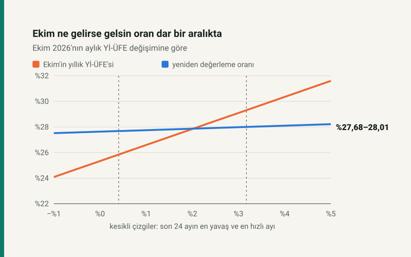

Kısa cevap
Aralık: Ekim'in aylık Yİ-ÜFE değişimi son 24 ayın en düşüğü (%0,40, Aralık 2024) ile en yükseği (%3,17, Nisan 2026) arasında kalırsa oran %27,68–%28,01. Ekim'de fiyatlar hiç artmasa bile %27,63.
Neden bu kadar dar? Oran nokta değil ortalama karşılaştırması; Ekim on iki aydan biri. Ekim'in aylık değişimindeki her 1 puan oranı yalnız 0,12 puan oynatıyor.
Ne zaman kesinleşir? TÜİK Ekim üretici fiyatlarını 3 Kasım 2026'da açıklıyor; oran o sabah hesaplanabilir. Resmî oranı Hazine ve Maliye Bakanlığı Vergi Usul Kanunu Genel Tebliğiyle ilan eder.
Oran nasıl hesaplanıyor?
Vergi Usul Kanunu mükerrer 298/B, yeniden değerleme oranını Yurt İçi Üretici Fiyat Endeksinde (Yİ-ÜFE) "ekim ayı itibarıyla son bir yıllık dönemde meydana gelen ortalama fiyat artış oranı" olarak tanımlıyor. TÜİK bülteninde bu, "on iki aylık ortalamalara göre değişim" satırı: Kasım 2025–Ekim 2026 endekslerinin ortalaması, bir önceki Kasım–Ekim ortalamasına bölünüyor.
Bu tanımı sitenin aldığı TCMB serisine uyguladığımızda son beş yılın ilan edilen oranı iki ondalıkta birebir çıkıyor: 2021 için %36,20, 2022 için %122,93, 2023 için %58,46, 2024 için %43,93, 2025 için %25,49. Hesap doğru kurulmuş; 2026 için eksik olan tek şey Ekim endeksi.
Ekim'in ağırlığı on ikide bir
Paydadaki on iki ayın hepsi geçmişte kaldı. Paydaki on iki ayın on biri, Kasım 2025'ten Eylül 2026'ya, açıklandı. Ekim yalnız payın içinde ve on ikide bir ağırlıkla duruyor. Bu yüzden Ekim'deki bir sürpriz, Ekim'in yıllık ÜFE'sini ciddi oynatırken orana neredeyse yansımıyor:
| Ekim için senaryo | Aylık değişim | Ekim yıllık Yİ-ÜFE | Yeniden değerleme oranı |
|---|---|---|---|
| Ekim'de fiyatlar %5 düşer (uç durum) | −%5,00 | %19,07 | %27,05 |
| Ekim'de hiç artış yok | %0,00 | %25,34 | %27,63 |
| Son 24 ayın en yavaş ayı (Aralık 2024) | %0,40 | %25,85 | %27,68 |
| Geçen Ekim kadar (Ekim 2025) | %1,63 | %27,38 | %27,83 |
| Son 24 ayın en hızlı ayı (Nisan 2026) | %3,17 | %29,31 | %28,01 |
| Ekim'de fiyatlar %10 artar (uç durum) | %10,00 | %37,87 | %28,81 |
Son satırlar uç durumlar: Ekim'de üretici fiyatları %5 düşse oran %27,05, %10 artsa %28,81. İkisi de son iki yılda hiç görülmemiş aylık hareketler; yine de aralık iki puana bile açılmıyor.
Yöntem geçmişte tutar mıydı?
Aynı hesabı geçmiş beş yılın Eylül'ünde yapsaydık: o güne kadarki 24 ayın en düşük ve en yüksek aylık değişimini Ekim'e koyup aralığı çıkarır, sonra ilan edilen oranla karşılaştırırdık.
| Yıl | Önceki 24 ayın aylık aralığı | Oran aralığı | İlan edilen | Ekim gerçekte | Sonuç |
|---|---|---|---|---|---|
| 2021 | −%0,08 – %4,34 | %35,52 – %36,08 | %36,20 | %5,24 | 0,12 puan dışında |
| 2022 | %1,22 – %19,08 | %121,37 – %125,60 | %122,93 | %7,83 | içinde |
| 2023 | −%0,24 – %19,08 | %58,12 – %61,15 | %58,46 | %1,94 | içinde |
| 2024 | −%0,24 – %8,23 | %43,73 – %44,84 | %43,93 | %1,29 | içinde |
| 2025 | %0,40 – %4,14 | %25,35 – %25,79 | %25,49 | %1,63 | içinde |
Beş yılın dördünde ilan edilen oran aralığın içinde. Tutmayan yıl 2021: o Ekim üretici fiyatları ayda %5,24 arttı, önceki iki yılın en yüksek ayını (%4,34) aştı ve oran aralığın 0,12 puan üstünde kaldı. Yani yöntem bir aralık veriyor, kesinlik değil; ama kaçırdığı yılda bile hata puanın onda biri düzeyinde.
2027 gelir vergisi dilimleri
Gelir Vergisi Kanunu mükerrer 123'e göre tarifedeki dilim tutarları her yıl yeniden değerleme oranında artırılıyor ve hesaplanan tutarın "%5'ini aşmayan kesirleri dikkate alınmıyor". Kesir hep aşağı atıldığı için ilan edilen dilim, oranla hesaplanan tutarın en çok %5 altında olabiliyor; hiçbir zaman üstünde değil. Aralığın iki ucuyla 2027 dilimleri şu pencerede:
| Dilim | 2026 | Oranla, alt uç | Oranla, üst uç | En düşük ilan |
|---|---|---|---|---|
| 1. eşik (%15 → %20) | 190.000 | 242.596 | 243.213 | 230.467 |
| 2. eşik (%20 → %27) | 400.000 | 510.729 | 512.028 | 485.194 |
| 3. eşik (%27 → %35) | 1.500.000 | 1.915.235 | 1.920.105 | 1.819.474 |
| 4. eşik (%35 → %40) | 5.300.000 | 6.767.165 | 6.784.374 | 6.428.808 |
Pencerenin genişliği oranın belirsizliğinden değil, kesir atma kuralından geliyor: iki uç arasında birinci dilimde yalnız 617 TL fark var, ama kanunun izin verdiği yuvarlama payı on binlerce lira. 2026 tarifesinde atılan kesir %0,39 ile %4,17 arasındaydı (yeniden değerleme oranı nedir). Dilimlerin asgari ücretten geride kalırsa maaşa ne yaptığı: 2027 vergi dilimleri asgari ücretten az artarsa.
MTV: kural bu oran, ama 2026'da uygulanmadı
Motorlu taşıtlar vergisi tutarları da her yıl yeniden değerleme oranıyla güncelleniyor; ancak Cumhurbaşkanının bu oranı MTV için farklı belirleme yetkisi var ve 2026'da kullanıldı: 2025 oranı %25,49 iken MTV, 30 Aralık 2025 tarihli 10783 sayılı Cumhurbaşkanı Kararıyla %18,95 artırıldı. Kanunun kendi oranı uygulanırsa 1301–1600 cm³, 1–3 yaş bir otomobilin (I) tarifesinin ilk kademesindeki 10.016 TL, 2027'de 12.788 TL ile 12.821 TL arasına çıkar. 2027 için farklı bir oran belirlenip belirlenmeyeceği bugün bilinmiyor. Tarifenin tamamı: 2026 MTV ne kadar?
Enflasyondan farklı bir sayı
Oran tüketici değil üretici fiyatlarından, nokta değil ortalamadan geliyor. Eylül 2026'da yıllık tüketici enflasyonu %29,73, yıllık Yİ-ÜFE %27,38; oran aralığı ikincisine yakın. Oranı tek bir ayın yıllık değişimi değil, on iki ayın tamamı belirliyor: Kasım 2025'ten bu yana yıllık Yİ-ÜFE %27,17 ile %28,93 arasında dolaştı ve ortalama karşılaştırması bu bandın içine düşüyor.
Varsayımlar ve sınırlar
- Endeks serisi TCMB EVDS'den (TP.TUFE1YI.T1, TÜİK Yİ-ÜFE 2003=100), 22 Ekim 2026'da indirildi. TÜİK geçmiş ayları düzeltirse aralık küçük ölçüde değişir.
- Senaryo sınırları seçilmedi, ölçüldü: Ekim 2024–Eylül 2026 arasındaki 24 ayın en düşük ve en yüksek aylık değişimi. Ekim bunların dışında da kalabilir; 2021 bunun örneği.
- Dilim penceresi yalnız kanunun yuvarlama kuralını gösterir; ilan edilecek tutarı tahmin etmez.
- MTV satırı, kanunun oranı uygulanırsa ne olacağını gösterir; Cumhurbaşkanı kararı öngörülmez.
Kaynaklar
- 213 sayılı Vergi Usul Kanunu mükerrer m.298/B (yeniden değerleme oranının tanımı); 193 sayılı Gelir Vergisi Kanunu mükerrer m.123 (tarifenin güncellenmesi, %5 kesir)
- TÜİK Yurt İçi Üretici Fiyat Endeksi; seri TCMB EVDS üzerinden (TP.TUFE1YI.T1), Kasım 2018–Eylül 2026
- İlan edilen oranlar 2021–2025: VUK Genel Tebliğleri, sitenin endeksleme serisinde (
finans/endeksleme-serileri.js) - MTV: 58 Seri No.lu MTV Genel Tebliği (Resmî Gazete 31/12/2025, 5. mükerrer) ve 10783 sayılı Cumhurbaşkanı Kararı; sitenin MTV aracının tarife modülünde
Bütün oranlar yazının modülünden (oran.js) gelir. Modülün testi, 2021–2025 oranlarını ilan edilenlerle karşılaştırır ve yazıdaki her rakamı sayfada arar.
Sık sorulan sorular
2026 yeniden değerleme oranı ne kadar olacak?
Ekim 2026 Yİ-ÜFE'si 3 Kasım'da açıklanınca kesinleşir. Eylül'e kadarki on bir ayla, Ekim son iki yılın en yavaş ve en hızlı ayı arasında kalırsa oran %27,68 ile %28,01 arasında.
Yeniden değerleme oranı enflasyon mu?
Hayır. Tüketici değil üretici fiyatlarına (Yİ-ÜFE) bakar ve on iki aylık ortalamaların değişimidir. Eylül 2026'da yıllık TÜFE %29,73 iken yıllık Yİ-ÜFE %27,38'di.
2027 vergi dilimleri ne kadar artacak?
Dilimler yeniden değerleme oranıyla artırılıp %5'i aşmayan kesirleri atılarak ilan edilir. 2026'da 190.000 TL olan birinci dilim, oran aralığıyla en çok 243 bin TL civarına çıkar; kesir atılınca daha aşağıda ilan edilebilir.
2027 MTV yeniden değerleme oranı kadar mı artacak?
Kural bu, ama Cumhurbaşkanı MTV için farklı oran belirleyebiliyor. 2026'da %25,49 yerine %18,95 uygulandı. 2027 kararı henüz yok.